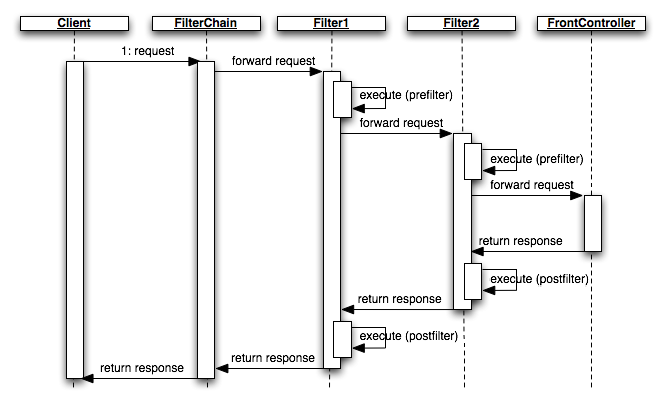

<table cellpadding="10" cellspacing="0" width="100%" border="0"><tr><td valign="top">
<div><a name=""></a><h1>Request Intercepting Filters</h1>
  <div class="ref-purpose">Filtering requests</div>
 <div class="ref-synopsis"></div>
<h2>Table of Contents</h2>
<ul>

<a href="Filter/tutorial_Filter.pkg.html#intro">Introduction</a><br />

<a href="Filter/tutorial_Filter.pkg.html#interecing_filter">Intercepting filter pattern</a><br />

<a href="Filter/tutorial_Filter.pkg.html#interecing_filter_and_routes">Intercepting filter and Routes</a><br />
</ul>

 <p></p>
 <span><a name="intro"></a><h2>Introduction</h2><p>Lion defines a complete infrastructure of modules and classes to dispatch and transform client requests in terms of application components.<br />
   The request dispatching mechanism receives many different types of requests, which require varied types of processing. Some requests are simply forwarded to a concrete controller, while other requests must be modified, audited, or uncompressed before being further processed.</p>
   <p>When a request enters on Lion, it often must pass several entrance tests prior to the main processing stage. i.e. perform the user authentication, switch the language, validate certain constraints, ...</p>
   <p>The key to solving this problem in a flexible and unobtrusive manner is to have a simple mechanism for adding and removing processing components, in which each component completes a specific filtering action. This pattern is known as <strong>intercepting filter</strong>, which is one of the most interesting features on Lion request dispatcher system.</p></span>
 <span><a name="interecing_filter"></a><h2>Intercepting filter pattern</h2><p>Filters intercept incoming requests and outgoing responses, allowing preprocessing and post-processing. We are able to add and remove these filters unobtrusively, without requiring changes to our existing code.</p>
   <center><div class="messagebox note metadata plainlinks"><table style="width:100%; background:none"><tr><td width="60"></td><td>Lion intercepting filter has been based on the J2EE intercepting filter pattern.<br />
   To learn more about this pattern, take a look at <a href="http://java.sun.com/blueprints/corej2eepatterns/Patterns/InterceptingFilter.html">Core J2EE Patterns - Intercepting Filter</a></td></tr></table></div></center>
   <p>Execution life-cycle is as shown in the following sequence:</p>
   
   <p>Filters are executed before giving the control to the front controller (preFilter) and after returning the response to the client (postFilter).</p>
   <p>A filter is a class extending the <a href="Filter/__Filter.html">__Filter</a> abstract class, which contains a template method to allow the execution of code before and after giving the control to the front controller.<br />
   A filter class has the following appearance:
   <div class="listing"><pre><ol><li><div class="src-line"><span class="src-php">&lt;?php</span></div></li>
<li><div class="src-line">&nbsp;</div></li>
<li><div class="src-line"><span class="src-key">class&nbsp;</span><span class="src-id">MyFilter&nbsp;</span><span class="src-key">extends&nbsp;</span><a href="Filter/__Filter.html">__Filter</a>&nbsp;<span class="src-sym">{</span></div></li>
<li><div class="src-line">&nbsp;&nbsp;&nbsp;&nbsp;</div></li>
<li><div class="src-line">&nbsp;&nbsp;&nbsp;&nbsp;<span class="src-doc">/**</span></div></li>
<li><div class="src-line"><span class="src-doc">&nbsp;&nbsp;&nbsp;&nbsp;&nbsp;*&nbsp;This&nbsp;method&nbsp;is&nbsp;executed&nbsp;BEFORE&nbsp;giving&nbsp;the&nbsp;control&nbsp;to&nbsp;the&nbsp;front&nbsp;controller</span></div></li>
<li><div class="src-line"><span class="src-doc">&nbsp;&nbsp;&nbsp;&nbsp;&nbsp;*&nbsp;</span></div></li>
<li><div class="src-line"><span class="src-doc">&nbsp;&nbsp;&nbsp;&nbsp;&nbsp;*/</span></div></li>
<li><div class="src-line">&nbsp;&nbsp;&nbsp;&nbsp;<span class="src-key">public&nbsp;</span><span class="src-key">function&nbsp;</span><span class="src-id">preFilter</span><span class="src-sym">(</span><span class="src-id">__IRequest&nbsp;</span><span class="src-sym">&amp;</span><span class="src-var">$request</span><span class="src-sym">,&nbsp;</span><span class="src-id">__IResponse&nbsp;</span><span class="src-sym">&amp;</span><span class="src-var">$response</span><span class="src-sym">)&nbsp;</span><span class="src-sym">{</span></div></li>
<li><div class="src-line">&nbsp;&nbsp;&nbsp;&nbsp;&nbsp;&nbsp;&nbsp;&nbsp;...</div></li>
<li><div class="src-line">&nbsp;&nbsp;&nbsp;&nbsp;<span class="src-sym">}</span></div></li>
<li><div class="src-line">&nbsp;</div></li>
<li><div class="src-line">&nbsp;&nbsp;&nbsp;&nbsp;<span class="src-doc">/**</span></div></li>
<li><div class="src-line"><span class="src-doc">&nbsp;&nbsp;&nbsp;&nbsp;&nbsp;*&nbsp;This&nbsp;method&nbsp;is&nbsp;executed&nbsp;AFTER&nbsp;giving&nbsp;the&nbsp;control&nbsp;to&nbsp;the&nbsp;front&nbsp;controller</span></div></li>
<li><div class="src-line"><span class="src-doc">&nbsp;&nbsp;&nbsp;&nbsp;&nbsp;*&nbsp;</span></div></li>
<li><div class="src-line"><span class="src-doc">&nbsp;&nbsp;&nbsp;&nbsp;&nbsp;*/</span></div></li>
<li><div class="src-line">&nbsp;&nbsp;&nbsp;&nbsp;<span class="src-key">public&nbsp;</span><span class="src-key">function&nbsp;</span><span class="src-id">postFilter</span><span class="src-sym">(</span><span class="src-id">__IRequest&nbsp;</span><span class="src-sym">&amp;</span><span class="src-var">$request</span><span class="src-sym">,&nbsp;</span><span class="src-id">__IResponse&nbsp;</span><span class="src-sym">&amp;</span><span class="src-var">$response</span><span class="src-sym">)&nbsp;</span><span class="src-sym">{</span></div></li>
<li><div class="src-line">&nbsp;&nbsp;&nbsp;&nbsp;&nbsp;&nbsp;&nbsp;&nbsp;...</div></li>
<li><div class="src-line">&nbsp;&nbsp;&nbsp;&nbsp;<span class="src-sym">}</span></div></li>
<li><div class="src-line">&nbsp;&nbsp;&nbsp;&nbsp;</div></li>
<li><div class="src-line"><span class="src-sym">}</span></div></li>
</ol></pre></div></p>
   <p>However, we are able to just implement one of those methods, depending on the concrete filter.<br />
   i.e., imagine a filter to intercept when the currency parameter is present within the request in order to execute specific code before giving the control to the front controller:
   <div class="listing"><pre><ol><li><div class="src-line"><span class="src-php">&lt;?php</span></div></li>
<li><div class="src-line">&nbsp;</div></li>
<li><div class="src-line"><span class="src-key">class&nbsp;</span><span class="src-id">CurrencyFilter&nbsp;</span><span class="src-key">extends&nbsp;</span><a href="Filter/__Filter.html">__Filter</a>&nbsp;<span class="src-sym">{</span></div></li>
<li><div class="src-line">&nbsp;&nbsp;&nbsp;&nbsp;</div></li>
<li><div class="src-line">&nbsp;&nbsp;&nbsp;&nbsp;<span class="src-doc">/**</span></div></li>
<li><div class="src-line"><span class="src-doc">&nbsp;&nbsp;&nbsp;&nbsp;&nbsp;*&nbsp;Change&nbsp;the&nbsp;currency&nbsp;in&nbsp;session&nbsp;by&nbsp;a&nbsp;given&nbsp;one&nbsp;if&nbsp;the</span></div></li>
<li><div class="src-line"><span class="src-doc">&nbsp;&nbsp;&nbsp;&nbsp;&nbsp;*&nbsp;currency&nbsp;parameter&nbsp;is&nbsp;present&nbsp;within&nbsp;the&nbsp;request.</span></div></li>
<li><div class="src-line"><span class="src-doc">&nbsp;&nbsp;&nbsp;&nbsp;&nbsp;*</span></div></li>
<li><div class="src-line"><span class="src-doc">&nbsp;&nbsp;&nbsp;&nbsp;&nbsp;*/</span></div></li>
<li><div class="src-line">&nbsp;&nbsp;&nbsp;&nbsp;<span class="src-key">public&nbsp;</span><span class="src-key">function&nbsp;</span><span class="src-id">preFilter</span><span class="src-sym">(</span><span class="src-id">__IRequest&nbsp;</span><span class="src-sym">&amp;</span><span class="src-var">$request</span><span class="src-sym">,&nbsp;</span><span class="src-id">__IResponse&nbsp;</span><span class="src-sym">&amp;</span><span class="src-var">$response</span><span class="src-sym">)&nbsp;</span><span class="src-sym">{</span></div></li>
<li><div class="src-line">&nbsp;&nbsp;&nbsp;&nbsp;&nbsp;&nbsp;&nbsp;&nbsp;<span class="src-key">if</span><span class="src-sym">(</span><span class="src-var">$request</span><span class="src-sym">-&gt;</span><span class="src-id">hasParameter</span><span class="src-sym">(</span><span class="src-str">'currency'</span><span class="src-sym">))&nbsp;</span><span class="src-sym">{</span></div></li>
<li><div class="src-line">&nbsp;&nbsp;&nbsp;&nbsp;&nbsp;&nbsp;&nbsp;&nbsp;&nbsp;&nbsp;&nbsp;&nbsp;<span class="src-var">$currency_iso_code&nbsp;</span>=&nbsp;<span class="src-var">$request</span><span class="src-sym">-&gt;</span><span class="src-id">getParameter</span><span class="src-sym">(</span><span class="src-str">'currency'</span><span class="src-sym">)</span><span class="src-sym">;</span></div></li>
<li><div class="src-line">&nbsp;&nbsp;&nbsp;&nbsp;&nbsp;&nbsp;&nbsp;&nbsp;&nbsp;&nbsp;&nbsp;&nbsp;<span class="src-comm">//set&nbsp;the&nbsp;currency&nbsp;iso&nbsp;code&nbsp;within&nbsp;the&nbsp;CurrencyManager</span></div></li>
<li><div class="src-line">&nbsp;&nbsp;&nbsp;&nbsp;&nbsp;&nbsp;&nbsp;&nbsp;&nbsp;&nbsp;&nbsp;&nbsp;<span class="src-comm">//singleton&nbsp;instance:</span></div></li>
<li><div class="src-line">&nbsp;&nbsp;&nbsp;&nbsp;&nbsp;&nbsp;&nbsp;&nbsp;&nbsp;&nbsp;&nbsp;&nbsp;<span class="src-id">CurrencyManager</span><span class="src-sym">::</span><span class="src-id">getInstance</span><span class="src-sym">(</span><span class="src-sym">)</span><span class="src-sym">-&gt;</span></div></li>
<li><div class="src-line">&nbsp;&nbsp;&nbsp;&nbsp;&nbsp;&nbsp;&nbsp;&nbsp;&nbsp;&nbsp;&nbsp;&nbsp;&nbsp;&nbsp;&nbsp;&nbsp;&nbsp;&nbsp;&nbsp;&nbsp;&nbsp;&nbsp;&nbsp;&nbsp;&nbsp;&nbsp;&nbsp;&nbsp;&nbsp;<span class="src-id">setCurrencyIsoCode</span><span class="src-sym">(</span><span class="src-var">$currency_iso_code</span><span class="src-sym">)</span><span class="src-sym">;</span></div></li>
<li><div class="src-line">&nbsp;&nbsp;&nbsp;&nbsp;&nbsp;&nbsp;&nbsp;&nbsp;<span class="src-sym">}</span></div></li>
<li><div class="src-line">&nbsp;&nbsp;&nbsp;&nbsp;<span class="src-sym">}</span></div></li>
<li><div class="src-line">&nbsp;&nbsp;&nbsp;&nbsp;</div></li>
<li><div class="src-line"><span class="src-sym">}</span></div></li>
</ol></pre></div></p></span>
 <span><a name="interecing_filter_and_routes"></a><h2>Intercepting filter and Routes</h2><p>Filters are associated to routes declaratively within the configuration.<br />
   When lion resolves a route depending on the request, it recover the filter chain associated to the route and executes it.</p>
   <p>The way to associate a filter to a route is within the configuration, inside the <i>filters</i> section.</p>
   <p>i.e.
   <div class="listing"><pre><ol><li><div class="src-line"><span class="src-php">&lt;?</span><span class="src-id">xml&nbsp;version&nbsp;</span>=&nbsp;<span class="src-str">&quot;1.0&quot;&nbsp;</span><span class="src-id">standalone</span>=<span class="src-str">&quot;yes&quot;</span><span class="src-php">?&gt;</span></div></li>
<li><div class="src-line">&nbsp;</div></li>
<li><div class="src-line">&lt;configuration&gt;</div></li>
<li><div class="src-line">&nbsp;</div></li>
<li><div class="src-line">&nbsp;&nbsp;&lt;filters&gt;</div></li>
<li><div class="src-line">&nbsp;</div></li>
<li><div class="src-line">&nbsp;&nbsp;&nbsp;&nbsp;&lt;filter&nbsp;name=&quot;myFilter&quot;&nbsp;class=&quot;MyFilter&quot;&gt;</div></li>
<li><div class="src-line">&nbsp;&nbsp;&nbsp;&nbsp;&nbsp;&nbsp;&lt;apply-to&gt;</div></li>
<li><div class="src-line">&nbsp;&nbsp;&nbsp;&nbsp;&nbsp;&nbsp;&nbsp;&nbsp;&lt;route&nbsp;id=&quot;myRoute&quot;/&gt;</div></li>
<li><div class="src-line">&nbsp;&nbsp;&nbsp;&nbsp;&nbsp;&nbsp;&lt;/apply-to&gt;</div></li>
<li><div class="src-line">&nbsp;&nbsp;&nbsp;&nbsp;&lt;/filter&gt;&nbsp;&nbsp;</div></li>
<li><div class="src-line">&nbsp;&nbsp;&nbsp;&nbsp;</div></li>
<li><div class="src-line">&nbsp;&nbsp;&lt;/filters&gt;</div></li>
<li><div class="src-line">&nbsp;&nbsp;</div></li>
<li><div class="src-line">&lt;/configuration&gt;</div></li>
</ol></pre></div>
   in this example, we are associating our filter to the <i>myRoute</i> route, which means that lion will execute this filter just when the request belong to the <i>myRoute</i> route.</p>
   <center><div class="messagebox note metadata plainlinks"><table style="width:100%; background:none"><tr><td width="60"></td><td>To learn more about routes, see the <a href="Request/tutorial_Request.UrlRouting.pkg.html">URLs and Routes</a> section.</td></tr></table></div></center>
   <p>We can also associate a filter to all the available routes, for all of those filters which must be executed always.<br />
   i.e., imagine that the currency filter of the example above must be executed for every request:
   <div class="listing"><pre><ol><li><div class="src-line"><span class="src-php">&lt;?</span><span class="src-id">xml&nbsp;version&nbsp;</span>=&nbsp;<span class="src-str">&quot;1.0&quot;&nbsp;</span><span class="src-id">standalone</span>=<span class="src-str">&quot;yes&quot;</span><span class="src-php">?&gt;</span></div></li>
<li><div class="src-line">&nbsp;</div></li>
<li><div class="src-line">&lt;configuration&gt;</div></li>
<li><div class="src-line">&nbsp;</div></li>
<li><div class="src-line">&nbsp;&nbsp;&lt;filters&gt;</div></li>
<li><div class="src-line">&nbsp;</div></li>
<li><div class="src-line">&nbsp;&nbsp;&nbsp;&nbsp;&lt;!--&nbsp;apply&nbsp;currency&nbsp;filter&nbsp;to&nbsp;all&nbsp;existing&nbsp;routes,</div></li>
<li><div class="src-line">&nbsp;&nbsp;&nbsp;&nbsp;&nbsp;&nbsp;&nbsp;&nbsp;&nbsp;which&nbsp;means&nbsp;that&nbsp;it&nbsp;will&nbsp;be&nbsp;always&nbsp;executed&nbsp;--&gt;</div></li>
<li><div class="src-line">&nbsp;&nbsp;&nbsp;&nbsp;&lt;filter&nbsp;name=&quot;currency_filter&quot;&nbsp;class=&quot;CurrencyFilter&quot;&gt;</div></li>
<li><div class="src-line">&nbsp;&nbsp;&nbsp;&nbsp;&nbsp;&nbsp;&lt;apply-to&gt;</div></li>
<li><div class="src-line">&nbsp;&nbsp;&nbsp;&nbsp;&nbsp;&nbsp;&nbsp;&nbsp;&lt;all-routes/&gt;</div></li>
<li><div class="src-line">&nbsp;&nbsp;&nbsp;&nbsp;&nbsp;&nbsp;&lt;/apply-to&gt;</div></li>
<li><div class="src-line">&nbsp;&nbsp;&nbsp;&nbsp;&lt;/filter&gt;&nbsp;&nbsp;</div></li>
<li><div class="src-line">&nbsp;&nbsp;&nbsp;&nbsp;</div></li>
<li><div class="src-line">&nbsp;&nbsp;&lt;/filters&gt;</div></li>
<li><div class="src-line">&nbsp;&nbsp;</div></li>
<li><div class="src-line">&lt;/configuration&gt;</div></li>
</ol></pre></div></p></span></div>
      </td></tr></table>